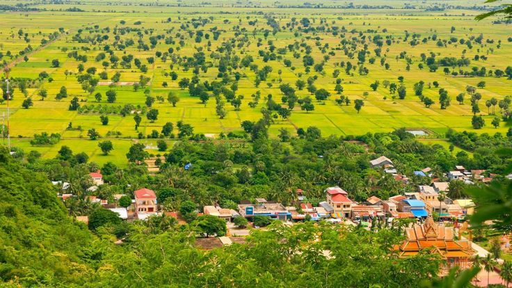
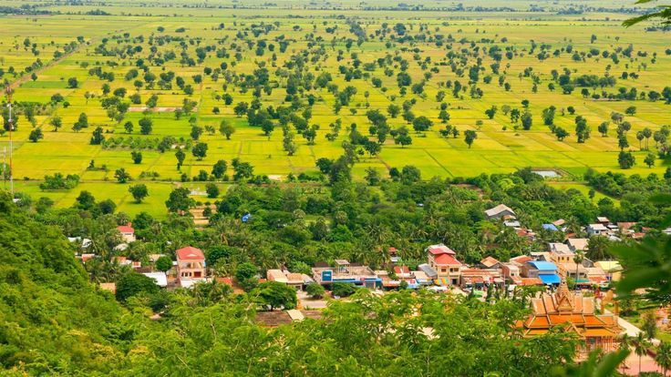

Battambang Countryside (ជនបទបាត់ដំបង)
The countryside surrounding Battambang is a photographer's paradise and offers visitors an authentic glimpse into rural Cambodian life. With endless emerald rice paddies, traditional wooden stilt houses, ancient temples scattered throughout the landscape, and friendly local communities, the countryside provides a peaceful escape from urban life.
 


Rice Paddies and Farming Life
The vast rice fields of Battambang are truly mesmerizing. During the wet season, they transform into a sea of vibrant green, while the dry season brings golden waves of mature rice ready for harvest. Farmers can be seen working in the fields using traditional methods that have been passed down through generations, often with the help of water buffalo.
Best Ways to Explore
• Bicycle tours through villages and rice fields
• Motorbike rides along country roads
• Guided countryside tours with local experts
• Walking tours in smaller villages
• Traditional ox-cart rides
• Sunset viewing from elevated viewpoints
Traditional Villages
The countryside is dotted with traditional Khmer villages where life moves at a slower pace. Here you'll find wooden houses on stilts, children playing in the streets, and locals going about their daily routines. Many villagers are involved in traditional crafts such as rice paper making, dried fish production, and bamboo weaving.
Local Experiences
Visitors can participate in various authentic rural experiences. Watch or help with rice planting or harvesting (depending on the season), visit local workshops where traditional crafts are made, observe the production of rice wine or rice paper, and enjoy home-cooked meals prepared by local families. These experiences provide insight into the agricultural lifestyle that has sustained Cambodian communities for centuries.
Natural Beauty
Beyond the rice fields, the countryside features diverse landscapes including lotus ponds, palm tree groves, small rivers and streams, and gentle hills. The area is also home to various bird species, making it popular with birdwatchers. The scenery changes dramatically throughout the day, with early morning mists, harsh midday sun, and spectacular golden-hour sunsets.
Photography Tip
The best time for photography in the countryside is early morning (6-8 AM) when farmers are working in the fields and the light is soft, or late afternoon (4-6 PM) for stunning sunset shots over the rice paddies.
Sustainable Tourism
When visiting the countryside, it's important to be respectful of local communities and their way of life. Always ask permission before taking photos of people, support local businesses by purchasing handicrafts directly from artisans, and consider hiring local guides who can provide authentic insights while ensuring your visit benefits the community.